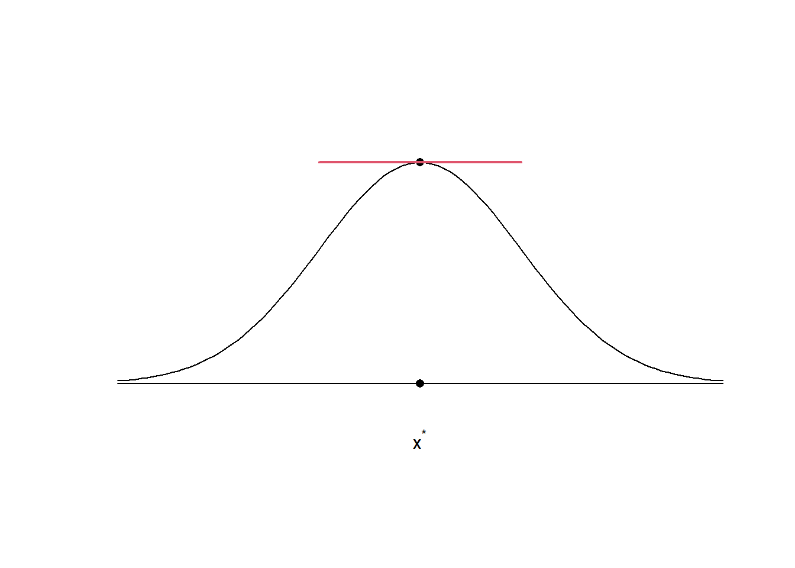
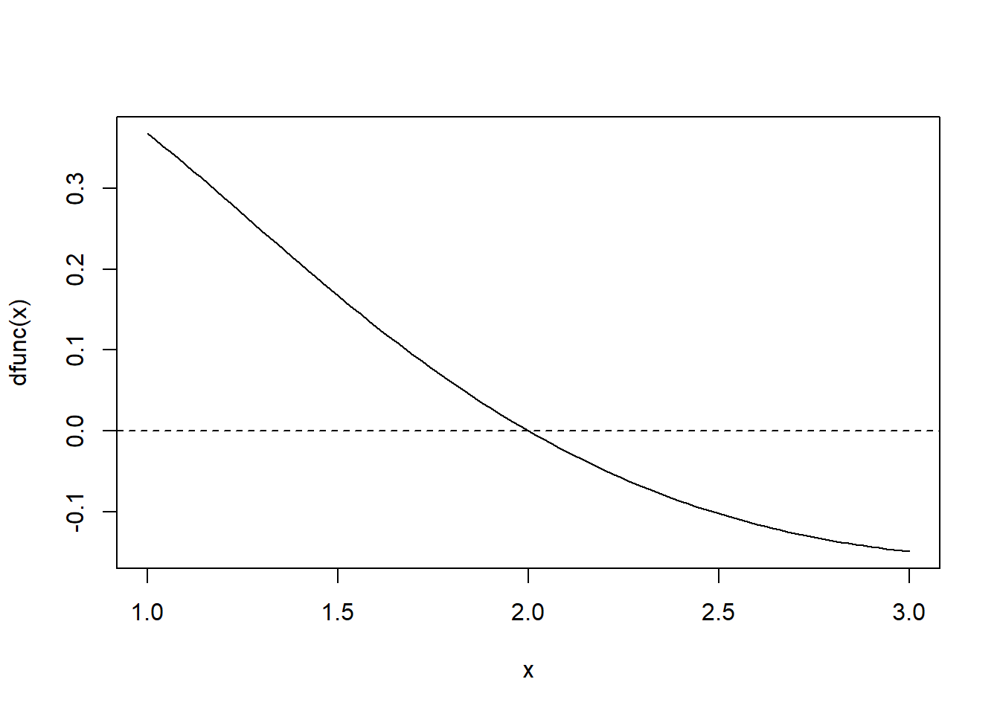
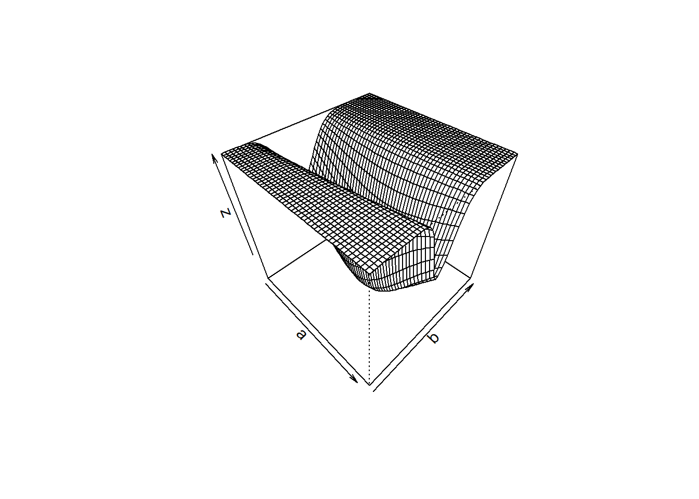
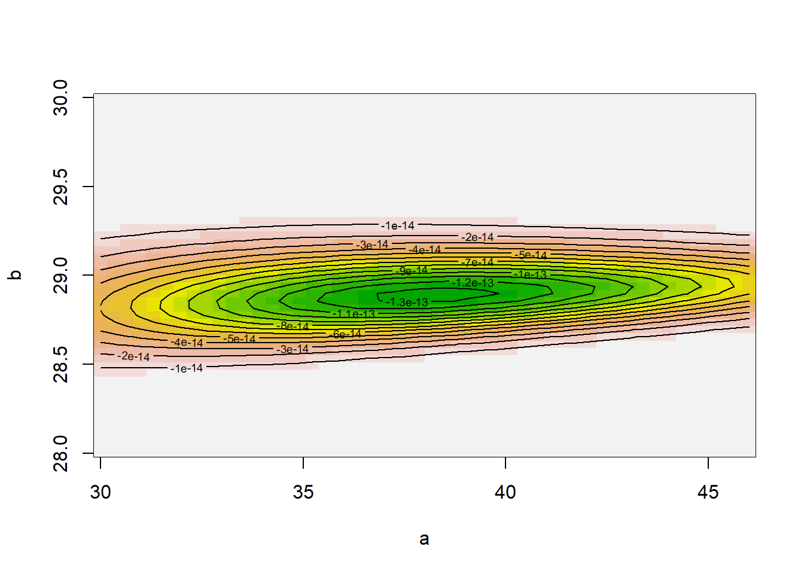
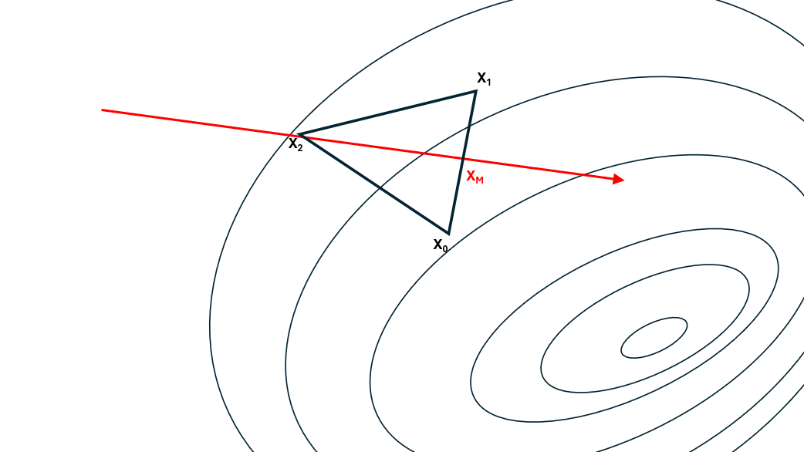
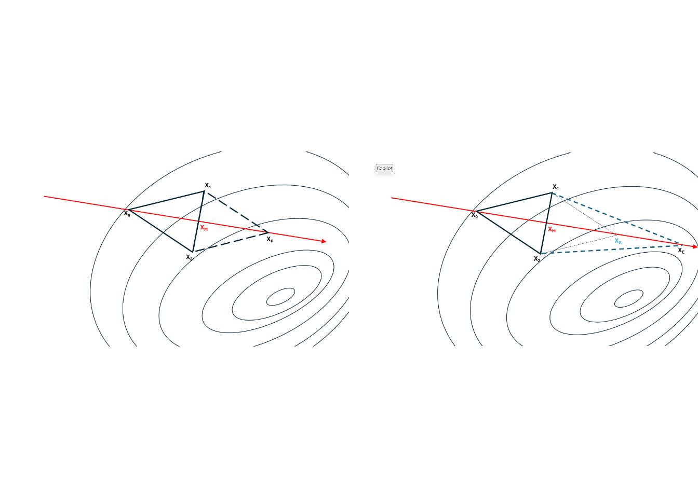

2 Métodos de otimização
O problema de otimização é bastante comum na estatística, especialmente para obtenção de estimativas via método da máxima verossimilhança.
Neste capítulo veremos os métodos clássicos de otimização numérica. Especificamente, serão estudados os métodos:
Newton-Raphson
Gradiente Descendente
Nelder Mead
2.1 Introdução
Seja \(f(x)\) uma função contínua. O problema de otimização tem por objetivo determinar o valor de \(x^\star\) qual que \[f(x)\geq f(x^\star)\] para todo \(x\) no domínio da função. No contexto de otimização, \(f(x)\) é denominada função objetivo, enquanto que o ponto \(x^\star\) é denominado ponto de mínimo global.
Em certas situações, estamos interessados apenas em determinar o valor \(x^\star\in D\) tal que \[f(x)\geq f(x^\star)\] para todo \(x\in D\). Nesse caso, \(x^\star\) é denominado ponto de mínimo local.
Dentro da otimização, o problema de encontrar um mínimo local é escrito como
\[\begin{align}&\min f(x)\\ &\hbox{s.t.}\\ &x\in D \end{align}\]
Em geral, os métodos computacionais para otimização são implementados apenas para encontrar mínimos locais. Isso ocorre porque
\[\max f(x)=\min -f(x).\] Observe que pontos ótimos, tanto mínimos quanto máximos, satisfazem \(f'(x^\star)=0\). A Figure 2.1 apresenta a reta tangente a um ponto de máxmimo, no qual o valor da derivada (inclinação da reta) é zero.
Portanto, o problema de encontrar um mínimo local em um intervalo \(D\) se reduz ao problema de encontrar \(x^\star\) tal que
\[f'(x^\star)=0,\] Isto implica que podemos utilizar dos os todos os métodos vistos no capítulo anterior para encontrar mínimos locais.
Example 2.1 Considere o problema de encontrar o máximo da função \[f(x)=x^2 e^{-x},\] com \(x>0\), cuja solução analítica é \(x^\star=2\). A derivada de \(f\) é dada por
\[f'(x)=2xe^{-x}-x^2e^{-x}=(2x-x^2)e^{-x}\] O gráfico da derivada da função, entre os pontos 1 e 3 é dado abaixo. Observe que as imagens nesses pontos têm sinais opostos.
dfunc <- function(x) (2*x - x^2) * exp(-x)
curve( dfunc(x) , 1, 3)
abline(h=0, lty =2)
Utilizando a função uniroot, obtemos o ponto desejado.
uniroot( dfunc, c(1,3) )$root
[1] 2
$f.root
[1] -7.437827e-08
$iter
[1] 6
$init.it
[1] NA
$estim.prec
[1] 6.709322e-05Exercício. Considere a função
\[f(x) = \sin(x) +\cos(x\sqrt{2}))+\sin(\pi x).\] 1. Implemente a função e faça o seu gráfico para o intervalo \((-10,10)\).
- Determine o mínimo global, sabendo que este está no intervalo \((-10,10)\)
Importante A função logaritmo é monótona crescente. Portanto, é verdade que
\[f(x)\geq f(x^\star)\Leftrightarrow \log f(x) \geq \log f(x^\star).\] Deste modo, encontrar o mínimo de \(\log f\) é equivalente a encontrar \(x^\star\).
Os métodos vistos até o momento não são suficientes para resolver os problemas gerais de otimização, especialmente pela exigência da forma analítica da derivada da função.
Além disso, os problemas de otmização que lidamos na estatística e nas principais áreas da matemática aplicada envolvem funções do tipo \(f:\mathbb{R}^n\rightarrow \mathbb{R}\), com \(n>1\). Deste modo, métodos de confinamento, como o da bisseção, são difícies de generalizar. O exemplo abaixo ilustra uma aplicação comum na estatística.
Example 2.2 Os dados abaixo apresentam as máximas anuais do Rio Negro entre 2004 e 2014.
maximas <- c(25.42, 28.76, 29.05, 27.16, 28.54, 28.96, 27.58, 29.30, 28.62, 28.21, 28.91, 28.27, 27.13, 28.10, 28.84, 28.18, 28.62, 29.77, 27.96, 28.62, 29.97, 29.33, 29.50)Assim como o Teorema Central do Limite dá uma distribuição aproximada para a média amostral, o Teorema de Fisher-Tippet diz que a distribuição dos máximos tende a uma distribuição denominada Valores Extremos. Nesse caso em particular, a distribuição será a Weibull, cuja densidade é dada por
\[f(x|\alpha,\beta) = \begin{cases} \frac{\alpha}{\beta}\left(\frac{x}{\beta}\right)^{\alpha-1}e^{-(x/\beta)^\alpha} & \text{para } x \ge 0 \\ 0 & \text{para } x < 0 \end{cases}\]
com \(\alpha,\beta>0\). O valor de \(\alpha,\beta\) que maximiza a função \[L(\alpha,\beta)=\prod_{i=1}^n f(x_i|\alpha,\beta)\] é denominado estimativa de máxima verossimilhança. Abaixo, mostramos a implementação de \(-L(\alpha,\beta)\) e algumas representações gráficas da superfície a ser otimizada
L <- function(a,b) -prod(dweibull(maximas, shape = a, scale = b, log = F))
a <- seq(30,46, length.out = 50)
b <- seq(28,30, length.out = 50)
z <- outer(a, b, Vectorize(L))
persp(a,b,z, theta = 45, phi = 45)
image(a,b,z, col=terrain.colors(20))
contour(a,b,z, add = T)
É importante ressaltar que, por motivos de estabilidade numérica, \(\log L(\alpha,\beta)\) deve ser implementada no lugar de \(L(\alpha,\beta)\)
Para o caso \(n\)-dimensional, o teste da derivada se mantém, conforme o teorema a seguir.
Theorem 2.1 (Condição necessária de primeira ordem) Se \(\boldsymbol{x}^\star\) é um ponto de mínimo, então \[\nabla f(\boldsymbol{x}^\star)=\left(\frac{\partial f}{\partial x_1},\ldots,\frac{\partial f}{\partial x_n}\right)^T=\textbf{0}_n.\]
Para o próximo resultado, relembre que a matriz \(B\) é posivita definida se \(\boldsymbol{x}^TB\boldsymbol{x}>0\) para todo \(\boldsymbol{x}\neq \textbf{0}\) e positiva semidefinida se \(\boldsymbol{x}^TB\boldsymbol{x}\geq 0\) para todo \(\boldsymbol{x}.\)
Theorem 2.2 (Condição necessária de segunda ordem) Se \(\boldsymbol{x}^\star\) é um ponto de mínimo local de \(f\) e se existe \(\nabla f\) contínua na vizinhança de \(\boldsymbol{x}^\star\), então \(\nabla f(\boldsymbol{x}^\star)=\textbf{0}\) e \(\mathcal{H}f(\boldsymbol{x}^\star)\) é positiva semidefinida, onde \(\mathcal{H}f\), denominada Hessiana, é a matriz das segundas derivadas parciais da função, definida como:
\[ \mathcal{H} f(\mathbf{x}) = \left(\begin{array}{ccc} \frac{\partial^2 f}{\partial x_1^2} & \frac{\partial^2 f}{\partial x_1 \partial x_2} & \cdots & \frac{\partial^2 f}{\partial x_1 \partial x_n} \\ \frac{\partial^2 f}{\partial x_2 \partial x_1} & \frac{\partial^2 f}{\partial x_2^2} & \cdots & \frac{\partial^2 f}{\partial x_2 \partial x_n} \\ \vdots & \vdots & \ddots & \vdots \\ \frac{\partial^2 f}{\partial x_n \partial x_1} & \frac{\partial^2 f}{\partial x_n \partial x_2} & \cdots & \frac{\partial^2 f}{\partial x_n^2} \end{array}\right) \]
O seguinte teorema é fundamental para a construção dos principais algoritmos de otimização.
Theorem 2.3 (Teorema de Taylor) Suponha que \(f:\mathbb{R}^n\rightarrow\mathbb{R}\) é contínua e diferenciável. Então, para qualquer \(\boldsymbol{x}\) na vizinhança de \(\boldsymbol{x}_0\), valem as aproximações:
- Primeira ordem:
\[f(\boldsymbol{x})\approx f(\boldsymbol{x}_0)+(\boldsymbol{x}-\boldsymbol{x}_0)^T\nabla f(\boldsymbol{x}_0)\] 2. Segunda ordem:
\[f(\boldsymbol{x})\approx f(\boldsymbol{x}_0)+(\boldsymbol{x}-\boldsymbol{x}_0)^T\nabla f(\boldsymbol{x}_0)+\frac{1}{2}(\boldsymbol{x}-\boldsymbol{x}_0)^T\mathcal{H}(\boldsymbol{x}_0)(\boldsymbol{x}-\boldsymbol{x}_0)\]
Corolário. Suponha que \(f:\mathbb{R}^n\rightarrow\mathbb{R}\) é contínua e diferenciável. Então, para qualquer \(\boldsymbol{x}\) na vizinhança de \(\boldsymbol{x}_0\),
\[\nabla f(\boldsymbol{x})\approx \nabla f(\boldsymbol{x}_0)+\mathcal{H}f(\boldsymbol{x}_0)(\boldsymbol{x}-\boldsymbol{x}_0).\]
Theorem 2.4 (Condição suficiente de segunda ordem) Suponha que \(\mathcal{H}f(\boldsymbol{x})\) é contínua na vizinhança de \(\boldsymbol{x}^\star\), \(\nabla f(\boldsymbol{x}^\star)=\textbf{0}\) e \(\mathcal{H}f(\boldsymbol{x}^\star)\) é positiva definida. Então \(\boldsymbol{x}^\star\) é um minimizador local.
Nessas notas de aula, vamos considerar que \(f\) é uma função suave, o que significa que existe a segunda derivada e ela é contínua.
2.2 Método Newton-Raphson
Esse método consiste na aplicação direra do método dNewton-Raphson para encontrar raizes. Considere o problema de encontrar o zero da função \(f'(x)\). Então, a equação de iteração do método é
\[x_n=x_{n-1}-\frac{f'(x_{n-1})}{f''(x_{n-1})}.\] A vantagem deste método é que ele pode ser generalizado para \(f:\mathbb{R}^n\rightarrow \mathbb{R}\). Para um ponto \(\boldsymbol{x}\) próximo de \(\boldsymbol{x}_n\), pelo corolário do Teorema de Taylor temos que
\[\nabla f(\boldsymbol{x})\approx \nabla f(\boldsymbol{x}_{n}) +\mathcal{H}f(\boldsymbol{x}_{n})(\boldsymbol{x}-\boldsymbol{x}_{n})\] Vamos encontrar a raiz a aproximação acima: \[\textbf{0}_n= \nabla f(\boldsymbol{x}_{n}) +\mathcal{H}f(\boldsymbol{x}_{n})(\boldsymbol{x}-\boldsymbol{x}_{n})\Rightarrow \boldsymbol{x}=\boldsymbol{x}_n-[\mathcal{H}f(\boldsymbol{x}_n)]^{-1}\nabla f(\boldsymbol{x}_{n})\] logo, a equação de iteração é dada por em torno de \(x_0\) 'e dada por
\[\boldsymbol{x}_{n+1}=\boldsymbol{x}_n-[\mathcal{H}f(\boldsymbol{x}_n)]^{-1}\nabla f(\boldsymbol{x}_{n})\]
e o critério de parada é \(||\boldsymbol{x}_n-\boldsymbol{x}_{n-1}||\leq \varepsilon\).
Vamos resscrever a iteração do método Newton-Raphson do seguinte modo:
\[\boldsymbol{x}_{n}=\boldsymbol{x}_{n-1}+\underbrace{[\mathcal{H}f(\boldsymbol{x}_{n-1})]^{-1}}_{\alpha_{n-1}}\underbrace{(-\nabla f(\boldsymbol{x}_{n-1}))}_{p_{n-1}}=\boldsymbol{x}_{n-1}+\alpha_{n-1}p_{n-1}\] Na equação acima, o termo \(p_{n-1}\) indica a direção de maior inclinação, enquato \(\alpha_{n-1}\) indica o tamanho do salto (quanto mais plana for a função no ponto, maior é o valor de \([\mathcal{H}f]^{-1}\) e maior será o salto). Essa estrutura de direção e salto é utilizada em outros métodos de otimização.
Como a direção e o tamanho do salto são computados diretamente da função objetivo, temos que o metódo Newton-Rapshon é rápido quando o ponto inicial é escolhido próximo do ótimo e o custo de computar o gradiente e o inverso da Hessiana é baixo.
Algoritmo - Newton-Raphson
Inicialização. Comece com \(\boldsymbol{x}_0\) próximo de um mínimo local. Fixe um erro \(\varepsilon\) e faça ERRO\(=+\infty\) e comece com \(i=1\).
Iteração. Enquanto ERRO\(>\varepsilon\).
- Calcule \[\boldsymbol{x}_i=\boldsymbol{x}_{i-1}-[\mathcal{H}f(\boldsymbol{x}_{i-1})]^{-1}\nabla f(\boldsymbol{x}_{i-1})\] e faça \(i=i+1\).
b.Calcule ERRO\(=|\boldsymbol{x}_i-\boldsymbol{x}_{i-1}|=\sqrt{\sum_{j=1}^n (x_{i,j}-x_{i-1,j})^2}\)
Finalizando. Retorne \(x_i\)
Exercício 3
Considere a função \[f(x,y)=x^4+2y^4-4xy\] Começando no ponto \((2,1)\), implemente o método Newton-Raphon para encontrar um mínimo local para esta função.
2.3 Método da Descida do Gradiente
Um dos principais problemas do método Newton-Raphson é a inversão da matriz Hessiana a cada iteração.
Iniciando em um ponto \(\boldsymbol{x}_0\) próximo da raiz, a \(n\)-ésima iteração do método da Descida do Gradiente é dado por
\[\boldsymbol{x}_{n}=\boldsymbol{x}_{n-1}-\alpha_n\nabla f(\boldsymbol{x}_{n-1})\] onde \(\alpha_n\) é denominada taxa de aprendizado, sendo geralmente uma constante. Observe que esse método substitui a inversa da matriz Hessiana por um escalar. Essa simplificação abre mão da precisão do método de Newton em favor da eficiência computacional.
Algoritmo - Descida do Gradiente
Inicialização. Comece com \(\boldsymbol{x}_0\) próximo de um mínimo local. Fixe um erro \(\varepsilon\), faça ERRO\(=+\infty\) e comece com \(i=1\). Escolha um valor para \(\alpha\).
Iteração. Enquanto ERRO\(>\varepsilon\).
- Calcule \[\boldsymbol{x}_i=\boldsymbol{x}_{i-1}-\alpha\nabla f(\boldsymbol{x}_{i-1})\] e faça \(i=i+1\).
b.Calcule ERRO\(=|\boldsymbol{x}_i-\bolsymbol{x}_{i-1}|=\sqrt{\sum_{j=1}^n (x_{i,j}-x_{i-1,j})^2}\)
Finalizando. Retorne \(x_i\)
Exercício 4
Considere novamente a função \[f(x,y)=x^4+2y^4-4xy\] Começando no ponto \((2,1)\), implemente o método da Descida do Gradiente um mínimo local para esta função.
2.4 O Método BFGS (Broyden, Fletcher, Goldfarb, and Shanno)
Seja \(f\) uma função real e suave. Ao colocar o ponto de mínimo como a raiz de \(f'(x)\). Sabemos que a iteração do método de Newton Raphson é dado por \[x_n=x_{n-1}+\frac{f'(x_{n-1})}{f''(x_{n-1})}\]
enquanto que a iteração do método da secante é dado por
\[x_n=x_{n-1}+f'(x_{n-1})\frac{x_{n-1}-x_{n-2}}{f'(x_{n-1})-f'(x_{n-2})}\] onde \[\frac{f'(x_{n-1})-f'(x_{n-2})}{x_{n-1}-x_{n-2}}\approx f''(x_{n-1})\].
Portanto, o método da secante, sendo um método de quase-Newton, depende apenas do gradiente para aproximar a segunda derivada.
Considere agora que \(f:\mathbb{R}^n\rightarrow \mathbb{R}\), com \(n>1\). A expansão do gradiente em série de Taylor de primeira ordem em torno de \(\boldsymbol{x}_n\) é
\[\nabla f(x)=\nabla f(\boldsymbol{x}_n)+\mathcal{H}f(\boldsymbol{x}_n)(\boldsymbol{x}-\boldsymbol{x}_n).\] Deste modo, a matriz Hessiana em \(\boldsymbol{x}_n\) deve satisfazer
\[\nabla f(\boldsymbol{x})-\nabla f(\boldsymbol{x}_n)=\mathcal{H}f(\boldsymbol{x}_n)(\boldsymbol{x}-\boldsymbol{x}_n).\] O método BFGS procura criar uma sequência de matrizes positivas definidas \(\textbf{B}_1,\ldots,\textbf{B}_n\) tais que
\[\nabla f(\boldsymbol{x}_{n+1})-\nabla f(\boldsymbol{x}_n)=\textbf{B}_{n}(\boldsymbol{x}-\boldsymbol{x}_n).\] de tal forma que \(\textbf{B}_n\approx \mathcal{H}(\boldsymbol{x}_n)\). A obtenção exata de \(\textbf{B}_n\).
2.5 Método de Nelder e Mead
Um \(n\)-simplex é a forma com o menor número de vértices possível em uma dimensão \(n\), que seriam \(n+1\) vértices.
0-Simplex: um ponto.
1-Simplex: um segmento de reta (ligando dois pontos).
2-Simplex: É um triângulo (ligando três pontos não-colineares).
3-Simplex: É um tetraedro (uma pirâmide com quatro faces triangulares).
O métodos de Nelder Mead procura a direção do ótimo sem a necessidade do cálculo de derivadas, criando a busca através de uma sequência de simplex. Vamos explicar o algoritmo em detalhes para o caso geral, mas vamos ilustrar seu funcionamento para uma função \(f:\mathbb{R}^2\rightarrow\mathbb{R}\). A ?fig-nelder apresenta o \(n\)-simplex inicial (um triângulo).
Passo 1. Para o conjunto com \(n+1\) soluções, rotule as soluções como \(x_0,\ldots,x_{n-1}\) de modo que \(f(x_0)\leq \cdots\leq f(x_n)\). Determine o conjunto restante, dado por \(x_0,\ldots,x_{n-1}\). Vamos traçar a reta que passa pela pior solução e a média dos pontos no conjunto restante \(x_M\) (reta em vermelho). Observe que essa reta indica a direção do salto, que é oposta à pior solução.

Agora que a direção do salto foi determinada, o método utiliza uma série de estratégias para determinar o tamanho do salto.
Passo 2. Sua primeira tentativa é fazer uma reflexão, ou seja, se vale a pena procurar por uma solução utilizando o \(n\)-simplex refletido, calculando o ponto oposto ao pior na direção já determinada, dado por
\[x_r = x_M+(x_M-x_n)\] Se \(f(x_r)\) é melhor que pelo menos uma das soluções no conjunto restante (ou seja, \(f(x_r)<f(x_{n-1})\)), então, o método obteve sucesso.
Caso \(A\): \(f(x_r)>f(x_0)\), então a solução encontrada não é a melhor de todas, mas pode substituir a pior. Um novo simplex é construído considerando. os pontos do conjunto restante e \(x_r\). Volte para o Passo 1
Caso \(B\): \(f(x_r)<f(x_0)\) então uma solução melhor que as demais foi encontrada. Então o método realiza uma expansão, para determinar se vale a pena procurar por uma solução em um triângulo maior, além de \(x_r\), utilizando a direção já estabelecida. O ponto da expansão é dado por
\[x_e=x_M+2(x_M-x_n)\] Se \(f(x_e)<f(x_r)\), então a expansão apresentou uma solução melhor e um novo simplex é construído unindo o conjunto restante com o ponto \(x_e\). Caso contrário, o novo simplex é construído considerando o ponto \(x_r\). Volte para o Passo 1.

Passo 3. Quando a reflexão falha em gerar um novo ponto, o método tenta uma contração.
- (Caso C). A contração externa ocorre quando a solução \(x_r\) é pior que todas as soluções no conjunto restante mas é melhor que \(x_n\). Isso significa que a direção da reflexão deveria estar certa mas a reflexão foi longe demais. Um ponto mais próximo de \(x_M\) é gerado
\[x_c=x_M+\frac{1}{2}(x_r-x_M)\] * (Caso D)A contração interna ocorre quando \(x_r\) é a pior de todas as soluções. Nesse caso o método assume que o ponto de mínimo está no interior do simplex, na direção do pior ponto. O ponto interno é dado por
\[x_c=x_M-\frac{1}{2}(x_n - x_M).\]
Se \(f(x_c)< f(x_n)\), então a contração teve êxito. Um novo simplex é construído considerando o ponto \(x_c\) e o conjunto restante. Volte para o Passo 1.
- Passo 4. O encolhimento é o último recurso. Ele ocorre quando todas as tentativas de melhorar o pior ponto falharam. O algoritmo reduz o tamanho do simplex encolhendo” todos os vértices (exceto \(x_0\)) em direção de \(x_0\). Todos os vértices são substituídos por
\[y_i=x_0+\frac{1}{2}(x_i-x_0).\] Um novo simplex será construído com os pontos \(y_1,\ldots,y_n\). Retorne ao Passo 1.
Critério de parada. Podemos parar o procedimento quando \(|x_0-x_n|<\varepsilon\)
Abaixo, segue o algoritmo Nelder-Mead
Algoritmo - Método de Nelder Mead
Ordenação dos Pontos: Ordene os pontos do simplex com base nos valores da função, do melhor para o pior: \(x_0, x_1, \ldots, x_n\).
Cálculo do Centroide: Calcule o centroide (\(x_M\)) dos pontos, excluindo o pior (\(x_n\)). \[x_M = \frac{1}{n} \sum_{i=0}^{n-1} x_i\]
Reflexão: Calcule o ponto de reflexão (\(x_r\)) na direção oposta ao ponto \(x_n\). \[x_r = x_M + (x_M - x_n)\]
Avaliação de \(x_r\):
- Sucesso Extremo (\(f(x_r) < f(x_0)\)): O ponto refletido é o melhor de todos. O método tenta uma expansão, calculando \[x_e = x_M + 2(x_M - x_n)\] Se \(f(x_e) < f(x_r)\), substitua \(x_n\) por \(x_e\). Senão, substitua \(x_n\) por \(x_r\).
- Sucesso Moderado (\(f(x_{n-1}) > f(x_r)\))}: O ponto refletido é melhor que o segundo pior. Substitua \(x_n\) por \(x_r\).
- Fracasso da Reflexão (\(f(x_r) \ge f(x_{n-1})\)): O ponto refletido não é uma melhoria significativa. O método tenta uma contração.
- {Contração Externa} (\(f(x_{n-1}) \le f(x_r) < f(x_n)\)): Calcule o ponto de contração (\(x_c\)). \[x_c = x_M + \frac{1}{2}(x_r - x_M)\] Se \(f(x_c) < f(x_r)\), substitua \(x_n\) por \(x_c\). Senão, vá para o Encolhimento.
- Contração Interna (\(f(x_r) \ge f(x_n)\)): Calcule o ponto de contração (\(x_c\)). \[x_c = x_M - \frac{1}{2}(x_n - x_M)\] Se \(f(x_c) < f(x_n)\), substitua \(x_n\) por \(x_c\). Senão, vá para o Encolhimento.
Encolhimento (Shrink): Se todas as outras tentativas falharem, encolha o simplex em direção ao melhor ponto (\(x_0\)). Para cada ponto \(x_i\) (\(i=1, \ldots, n\)), substitua-o por \(y_i\). \[y_i = x_0 + \frac{1}{2}(x_i - x_0)\]
Exercício 4
Considere novamente a função \[f(x,y)=x^4+2y^4-4xy\] Começando nos pontos \((0,0)\), \((1,2)\) e \((2,1)\), implemente o método de Nelder Mead para encontrar um mínimo local para esta função.
2.6 A função optim
A função optim agrega diversos otimizadores, sendo a principal função de otimização do R. Seus principais argumentos são:
par: vetor com ponto inicialfn: a função a ser minimizada. O seu primeiro argumento deve ser um vetor com a mesma dimensão deparmethod: são os métodos implementados. Em especial destacamos as opçõesNelder-Mead(padrão) eBFGS.
Exercício 5
Considere novamente a função \[f(x,y)=x^4+2y^4-4xy\] e o ponto inicial \((0,0)\), utilize a função optim para encontrar o mínimo global.
Exercício 6
Utilizand a função optim, encontre as estimativas de máxima verossimilhança para o problema dado no Exemplo 1.
2.7 Exercícios
Exercício.
Prove que
- Todo minimizador global é um minizador local.
- Nem todo minimizador local é um minimizador global
Exercício.
Prove que o problema \(\min f(x)\) é equivalente a \(\max -f(x)\).
Exercício
Uma condição \(C\) é dita ser suficiente para o resultado \(A\) quando a ocorrência de \(C\) implica em \(A\). Por outro lado, dizemos que uma condição \(C\) é necessária para \(A\) quando o resultado \(A\) implica na ocorrência de \(C\).
Vimos no Teorema da Condição Suficiente de Segunda Ordem que a condição:
\(\mathcal{H}f(\boldsymbol{x})\) é contínua na vizinhança de \(\boldsymbol{x}^\star\), \(\nabla f(\boldsymbol{x}^\star)=\textbf{0}\) e \(\mathcal{H}f(\boldsymbol{x}^\star)\) é positiva definida é suficiente para que \(\boldsymbol{x}^\star\). Nesse exercício, vamos mostrar que ela não é necessária, ou seja, é possível que exista um minimizador local que não satifaz a condição.
Seja \(f(x)=x^4\).
Prove que \(x^\star=0\) é um minimizador global.
Prove que a condição do Teorema da Condição Suficiente de Segunda Ordem não está satisfeita.